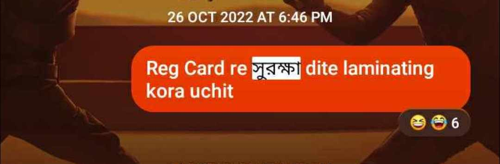
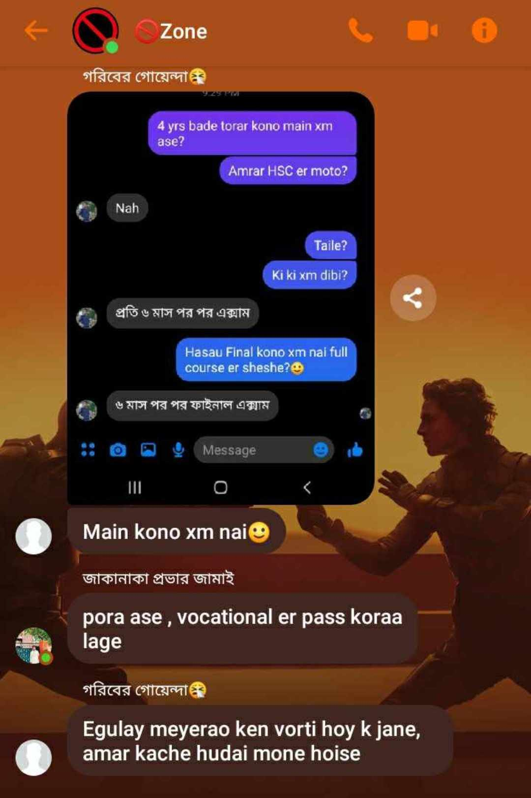

The members of the zone, never missing an opportunity, continued to tease and joke about Phardin, who later came to be known affectionately as "Kobi". Whether it was a casual conversation or a serious discussion, they would always find a way to bring up "Surokkha", turning it into a running joke within the group. This friendly banter, despite being at his expense, highlighted the camaraderie among the members and added a touch of humor to their interactions.
Surokkha Joke by Shuvo

Surokkha Jokes by Hrakib